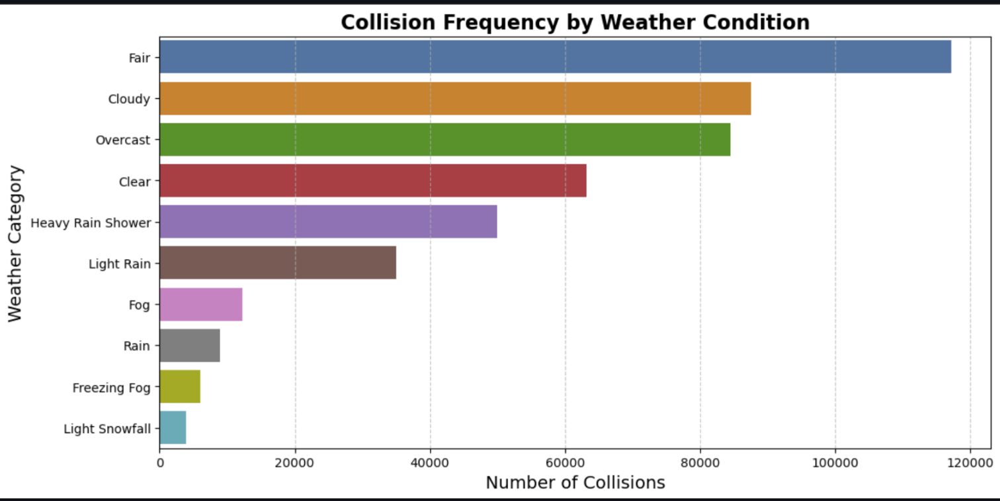
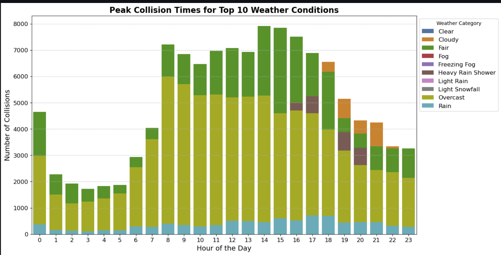
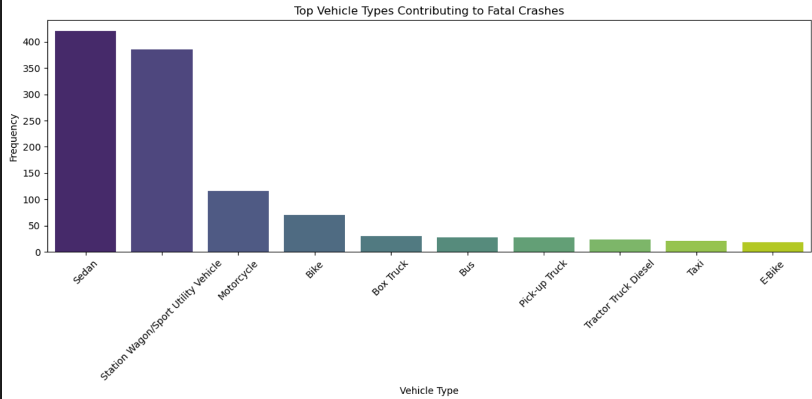
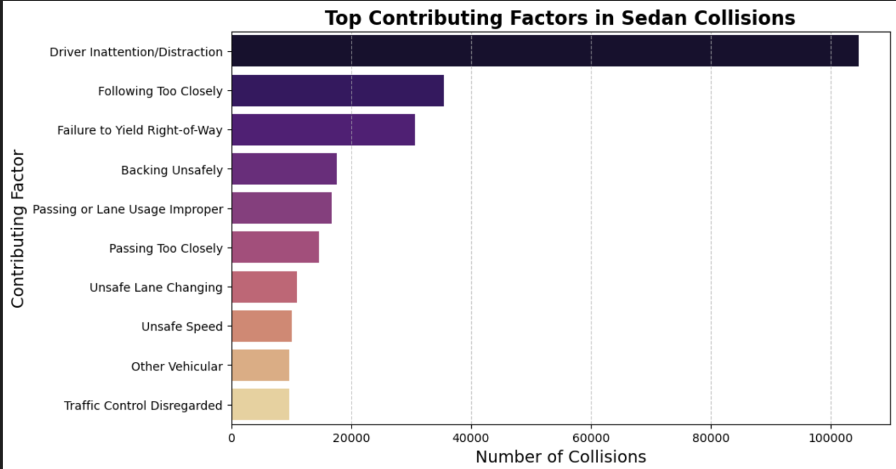
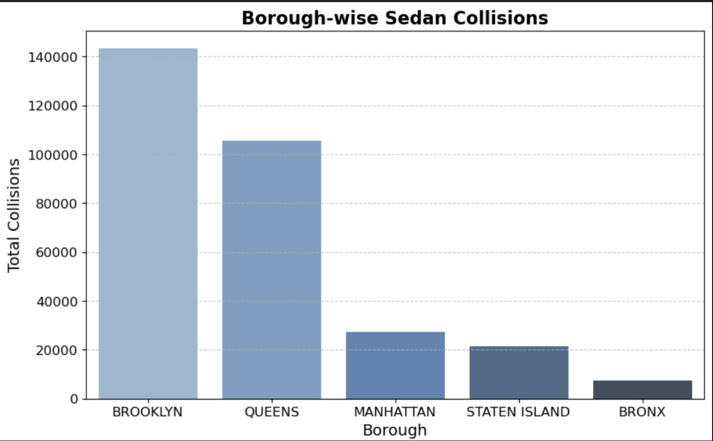

This project explores motor vehicle collisions in New York City, focusing on identifying high-risk areas,
understanding causes, and visualizing key trends. We utilized over 2 million records from NYC Open Data
covering multiple years.
Problem Statement
With rising accident rates in NYC, authorities need data-backed insights to improve road safety. Our goal was
to identify contributing factors, locate dangerous intersections, and track accident patterns over time.
Dataset & Sources
Source: NYC Open Data — Motor Vehicle Collisions - Crashes
Volume: 2M+ rows across 50+ features
Key Columns: Date, Time, Borough, Latitude/Longitude, Injuries, Contributing Factors
Methodology
Used Pandas for data wrangling and cleaning
Performed null analysis and removed inconsistent entries
Engineered features for borough-based and time-based analysis
Created grouped aggregations by zip code and borough
Used time-series plots to identify trends and anomalies
Key Visualizations
Explore visual insights into NYC collision data trends and high-risk areas.

Collision Frequency by Weather Condition
Shows how fair, cloudy, and overcast conditions are linked to more collisions.

Peak Collision Times for Top Weather Conditions
Analyzes collisions by hour for the 10 most common weather types.

Top Vehicle Types in Fatal Crashes
Highlights which vehicle types contribute most to deadly accidents.

Top Contributing Factors in Sedan Collisions
Distraction and close following are the top causes for sedan crashes.

Borough-wise Sedan Collisions
Brooklyn and Queens lead in total sedan-related collisions.
Model Prediction & Evaluation
While the project is primarily descriptive, we explored time-series decomposition and seasonal trends.
Data was grouped monthly to analyze spikes. The dashboard also includes filterable widgets to drill down
by location, weather, and contributing factors.
Real-World Impact
This analysis equips city planners, emergency services, and transportation authorities with actionable insights.
By identifying high-risk weather conditions, boroughs, and contributing vehicle types, stakeholders can enhance
emergency preparedness and implement targeted interventions that reduce the likelihood of future collisions.